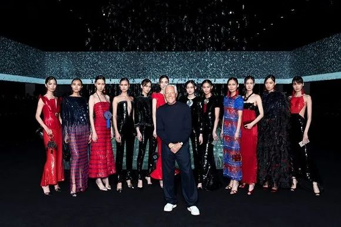

从玩时尚到做口罩，我经历的那些魔幻事……
原文链接 备份链接 20天上线口罩生产线，林芃遇到了很多转产防疫物资的同行，见识了原材料价格一天数变，还见识了借稀缺资源做起诈骗的人。他发了个朋友圈：这场疫情，像是一个放大镜，让我们发现，好人是真好，坏人是真坏，蠢人是真蠢，善良的人是真 …

图片来源：Highsnobeity
记者 ：楼婍沁
编辑 ：周卓然
“
除了让自家品牌转产防护装备，开云集团还将从中国进口300万只外科口罩用以支援法国医疗系统。
”
随着海外新馆病毒疫情的持续加剧，各国时尚公司都在不停升级对于抗疫工作的投入。
法国奢侈品集团开云就在当地时间3月22日发表一篇声明称，其旗下奢侈品牌巴黎世家（Balenciaga）及YSL（Yves Saint Laurent）均计划在保证员工个人安全的前提下，转产医用防护口罩。目前，相关工厂的口罩生产加工工艺流程及材料品质都已通过相关部门的审核验证。
而除了让自家品牌转产防护装备，开云集团还将从中国进口300万只医用外科口罩用以支援法国医疗系统。
此前，开云集团曾公开表示，受疫情影响，其截至3月31日的新财年第一财季营收预计较上年同期下降13%至14%。而第二季度的业绩预计将受到比这更严重的冲击。其第一财季数据计划将在4月21日对外公布。
事实上，近期转产防护设备的不只有开云集团旗下的品牌。快时尚品牌Zara母公司Inditex也将自家工厂改造用于防护服的生产，而LVMH发动旗下生产Givenchy、Dior等品牌香水的工厂转产消毒洗手液。而美国纺服企业Fruit of the Loom以及American Knits等公司还成立了一个“口罩联盟”，将从当地时间3月23日起动工生产医用口罩，并称将在一个月内实现周产1000万只医用口罩的产能目标。
与此同时，这些公司也均利用自己在中国市场的物流渠道和供应商资源从中国为其本国防疫工作采购物资。比如，LVMH就宣布将从中国采购共计4000万只口罩。第一批1000万只口罩近几天就能交付。
不过，疫情对于全球社会的打击不光体现在物质层面。每一个处在疫情发生地的人的心理健康也饱受负面影响。这也是为什么诸如Giorgio Armani这样的品牌也开始注重对本国人民的心理慰问。

Giorgio Armani与模特在品牌Giorgio Armani2020秋冬季后台合影
据《女装日报》消息，Giorgio Armani在当地时间3月21日买下了意大利国内超过60份报纸的广告版面，用以发布一篇致该国医护工作者的公开慰问信。信中写道，“看到你们克服如此大的困难，投身工作，为抗疫努力，实在令人动容……Giorgio Armani全公司和我个人，都与你们同在。”
Giorgio Armani是时尚业中最早对疫情做出反应的公司之一。它曾在刚刚结束的2020秋冬季米兰时装周期间，将自己的品牌大秀直接转为线上直播，并在工作现场派发防护口罩。在3月早些时候，该品牌还为意大利当地的医院和医疗机构捐赠了125万欧元的资金。
未经授权 禁止转载

原文链接 备份链接 20天上线口罩生产线，林芃遇到了很多转产防疫物资的同行，见识了原材料价格一天数变，还见识了借稀缺资源做起诈骗的人。他发了个朋友圈：这场疫情，像是一个放大镜，让我们发现，好人是真好，坏人是真坏，蠢人是真蠢，善良的人是真 …
原文链接 备份链接 2020年1月13日，疫情还远在长江边的武汉，身在北京的我简单地收拾了两件衣服，坐上开往河北省邯郸市的高铁，我的寒假田野调查就正式开始了。出发之前我向导师熊春文老师表达了自己想要去“曲周田野点”与村里的乡亲们过春节，并 …
原文链接 备份链接 ※文中涉及案例均为“反面教材”，切勿模仿。特殊时期，请大家不要存在侥幸心理，一定要规范佩戴口罩。 大家这几天还好吗？ 在疫情态势依然紧张的当下，社长最近一直积极响应号召龟缩在家，默默地 享受 承受着闲出屁来的日子，不出 …
原文链接 备份链接 体坛周报全媒体驻德国记者 杨子江 在北威疫情愈演愈烈的时候，巴伐利亚还是能买到消毒液的，我就曾在朋友圈秀过这边超市库存很多的消毒液，但是仅仅两天之后，当北威州的朋友恳请我去代买几瓶的时候，柜台上已经空空如也了。德国的媒 …
原文链接 备份链接 一个半月前，国内的亲属和新冠疫情的发展是他们担心的事情；一个半月后，他们开始担心起了身边人和自己。 配图 | Sipa图片社 陈愿看到学校官网上挂出本科和硕士的停课通知，是在当地时间2月22日晚——那一天，意大利伦巴第 …